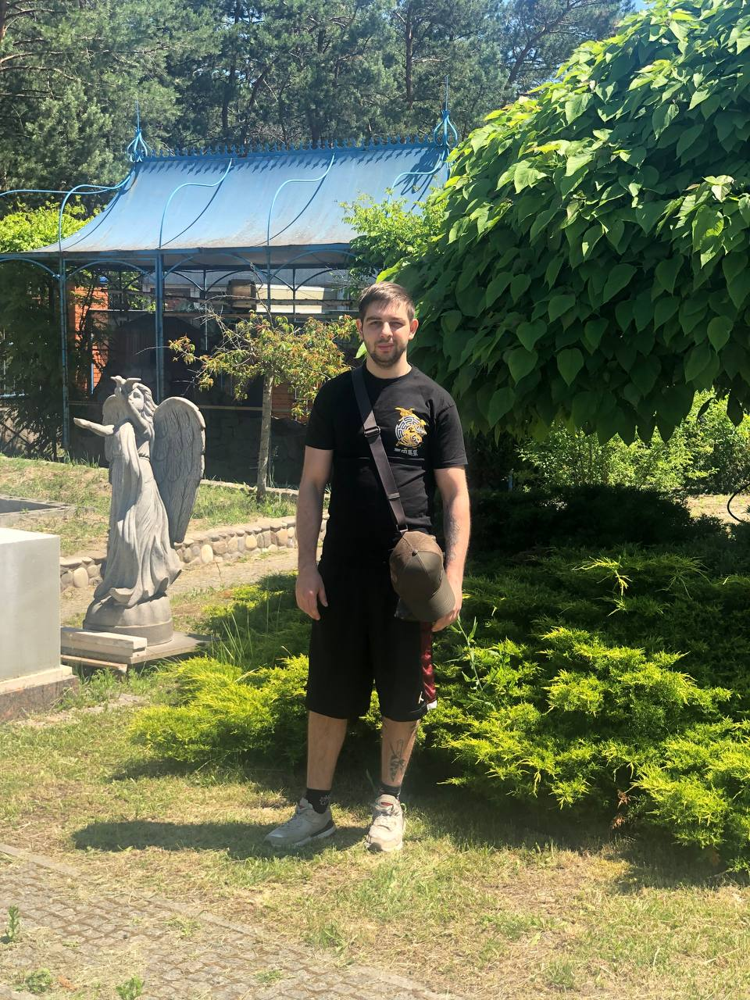

Front-End Developer
Я мотивований і захоплений фронтенд-розробник, який прагне створювати візуально привабливі та зручні для користувачів вебсайти. Маю сильну базу в HTML, CSS і JavaScript і бажаю розширювати свої навички та вносити свій вклад у розвиток важливих веб-досвідів. Швидко навчаюся, уважний до деталей і люблю працювати в команді.
Червень 2023 - теперішній час
Працював з компонентами Woerth та займався їхнім стилізуванням.
Працював з сервером, відправляючи та отримуючи запити, обробка запитів.
Працював з глобальним станом, навігацією по сайту, авторизацією користувачів через awt токен, створенням приватних маршрутів.
Працював з файлами. Відправка, отримання, завантаження їх.
Працював з часом і часовими зонами, створював таймер для замовлення страви.
Працював з компонентами Woerth та займався їхнім стилізуванням.
Створення та оптимізація коду, перехід на нові бібліотеки.
Дніпровський технологічний економічний коледж
Підприємницька, торговельна та біржова діяльність
Вересень 2021 - Червень 2024 | Україна